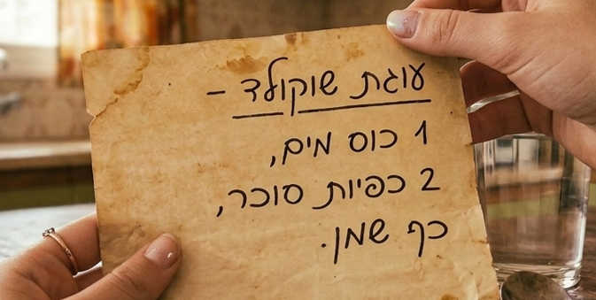
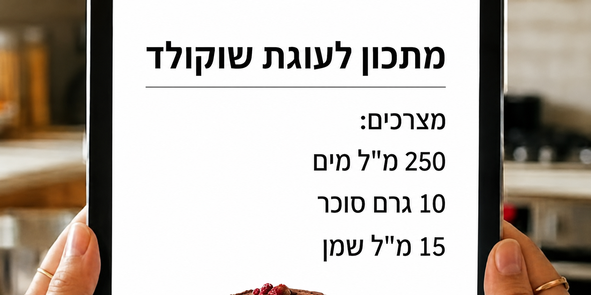
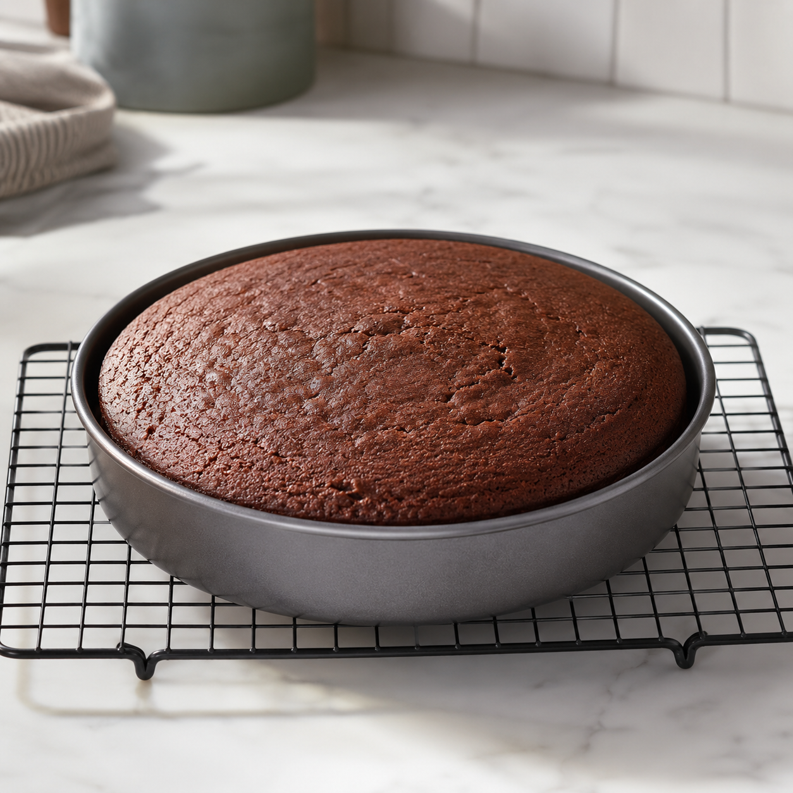

كل الاحترام!
إذا لم تنجحوا في الإجابة عن بعض الأسئلة،
فمن المهم أن تفهموا ما الذي لا يزال غير واضح، وأن تتوجهوا إلى الدردشة أو إلى المعلّم للحصول على شرح إضافي.
يحتوي السؤال على 4 بنود.
عليكم الإجابة عن 3 بنود على الأقل بشكل صحيح لتتمكّنوا من التقدّم.
بحسب جدول التحويل القياسي، معطى:
| 1 "كوب" = 240 ملل |
| 1 "ملعقة صغيرة" = 5 ملل |
| 1 "ملعقة كبيرة" = 15 ملل |
وجدت ريهام في الخزانة وصفة تركتها جدّتها من عام 1950. فيما يلي جزء منها:

وجد يوسف وصفة حديثة على الإنترنت. فيما يلي جزء منها:

البند أ
إذا استخدمنا وصفة الجدة، كم ملل من الماء سنضع؟

البند ب
هل الوصفة من عام 1950 والوصفة الحديثة ستُنتِجان كعكة متطابقة أم مختلفة بشكل ملحوظ؟
البند ت
لم تكن الجدة تعرف وحدات مثل مليلتر (ملل). لماذا تستخدم الوصفة الحديثة وحدات معيارية؟
البند ت
في محل حلويات يحرص على الدقة والتجانس، أي أداة تنصحون باختيارها لقياس 15 ملل من الزيت في الوصفة؟
اضغطوا على الإمكانية الأنسب.